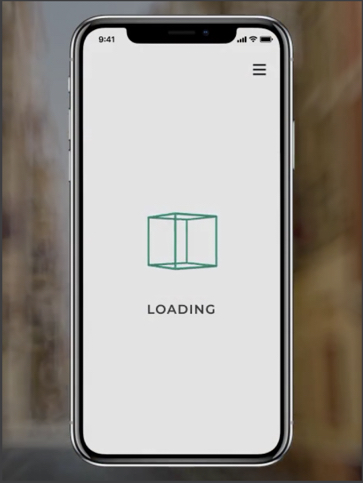
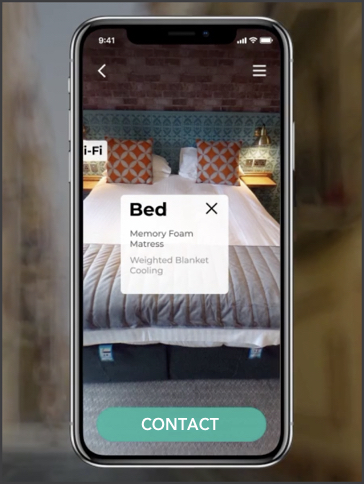
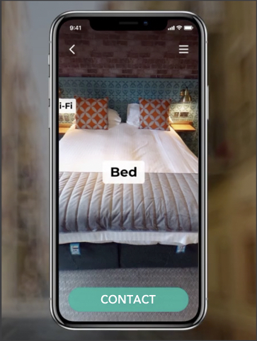
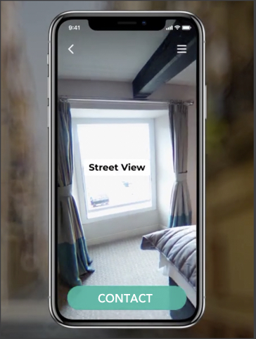
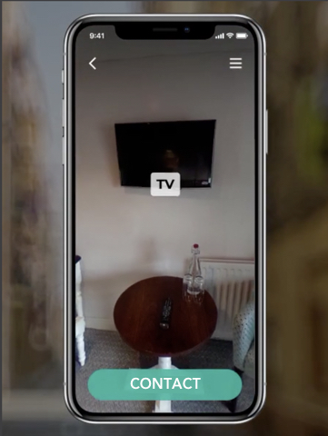
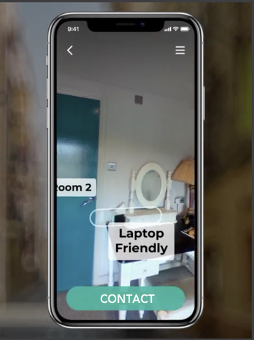
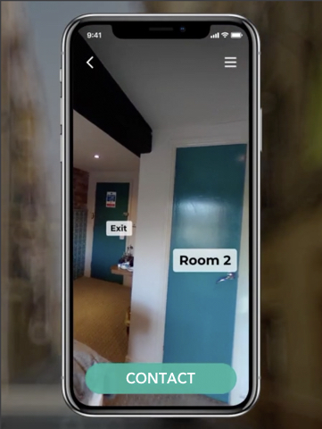

Guiding Questions
- How to make an effective way of finding home/rooms/spaces?
- How to find rooms while exploring the city?
Concept
I came up with the idea of finding rooms/spaces through the use Augmented Reality, while exploring the
city. This idea strike me when I was using Google Maps (AR feature). What if there's an app similar to
this, instead of giving directions, it tells me if any room is
available or any space available?
So, I recorded the video, while coming back home and tried this out. An application concept that helps you
find
the space, while you explore the city.
Not only this concept, allows you to find the room, but you can actually view the room there itself on the app and if you like it, you can contact the person! Also, you can click on the buttons like, Bed, Street view etc. to get more information about them!






